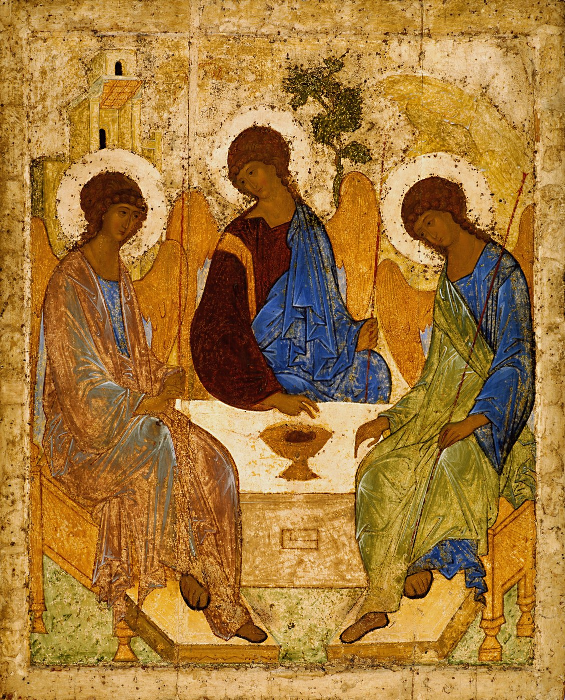
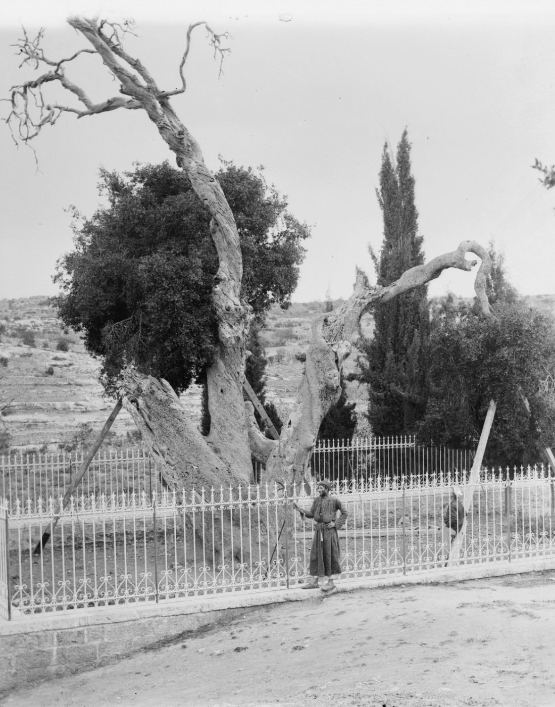
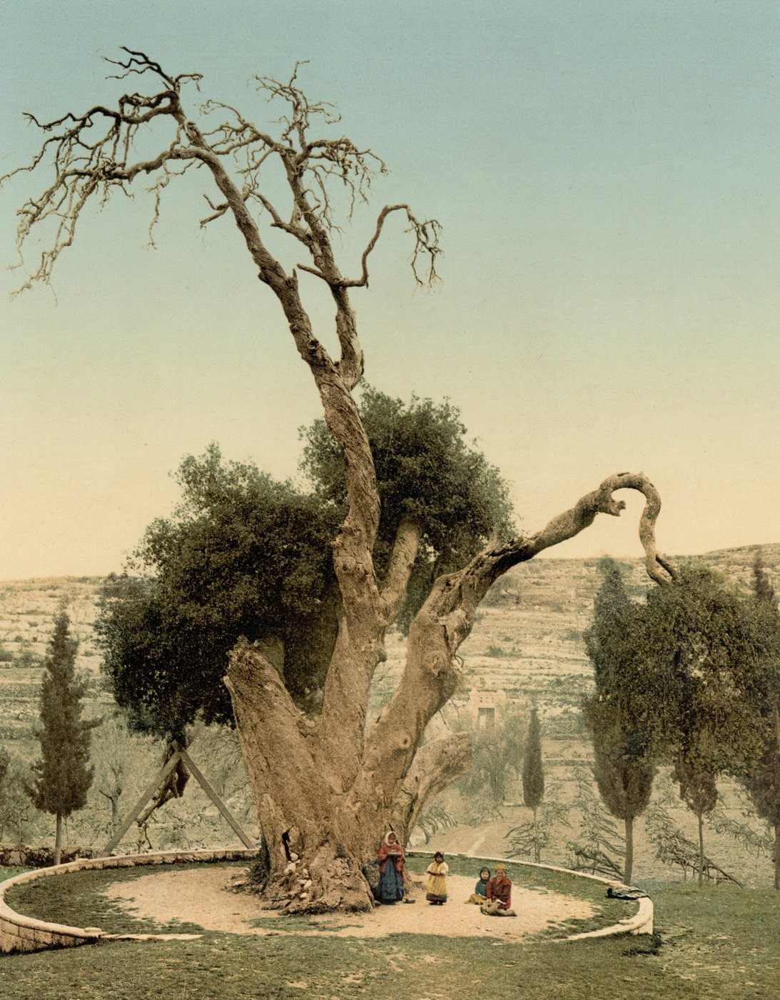

러시아, 정교회 소장(2023년까지 모스크바 트레티야코프 미술관)
하나님이 세 분이에요?
뜨거운 한낮, 장막 맞은편에 낯선 손님 셋이 서 있어요. 아브라함은 달려 나가 그들을 맞았어요.
그림 속에서 찾아보기
- 세 천사의 얼굴을 보세요. 누가 누구를 바라보고 있나요?
- 천사들 뒤에 있는 집, 나무, 산을 찾아보세요. 나무는 어느 천사 뒤에 있나요?
- 식탁 가운데 놓인 잔을 찾아보세요. 그리고 식탁 앞쪽을 보세요. 비어 있는 자리는 누구의 자리일까요?
이야기
아브라함이 마므레의 상수리나무들 곁, 장막 문에 앉아 있던 뜨거운 한낮이었어요(18:1). 눈을 들어 보니 “사람 셋이 맞은편에 서 있는지라”(18:2). 아브라함은 장막 문에서 달려 나가 그들을 맞으며 몸을 땅에 굽혔어요. 그리고 발 씻을 물을 가져오게 하고, 나무 아래에서 쉬시라고 청했어요(18:4).
아브라함은 급히 사라에게 고운 가루로 떡을 만들게 하고, 가축 떼에서 좋은 송아지를 골라 요리하게 했어요(18:6~7). 엉긴 젖과 우유와 송아지 요리를 차려 놓고, 손님들이 먹는 동안 “나무 아래에” 곁에 서 있었어요(18:8). 창세기는 이 이야기를 “여호와께서 … 아브라함에게 나타나시니라”(18:1)로 시작해요. 그래서 많은 그리스도인이 세 손님에게서 아버지와 아들과 성령, 한 분 하나님을 떠올려 왔어요. 예수님도 제자들에게 “아버지와 아들과 성령의 이름으로” 세례를 베풀라고 하셨어요(마 28:19).
러시아의 이콘 화가 안드레이 루블료프가 15세기 초, 모스크바 근처의 삼위일체 수도원을 위해 그렸다고 전해지는 이콘이에요. 수도원을 세운 라도네시의 성 세르기우스를 기리는 이콘이었어요. 루블료프는 아브라함과 사라를 빼고 세 손님만 그렸어요. 1929년 모스크바 트레티야코프 미술관으로 옮겨져 90년 넘게 그곳에 있다가, 2023년 러시아 정교회로 넘겨졌어요.
알고 보면
세 천사를 이어 보면 커다란 원이 생겨요. 식탁 앞쪽은 비어 있어서, 그림을 보는 사람이 그 자리에 함께 앉도록 초대받는 것 같다고 읽는 사람이 많아요. 잔 안을 자세히 보면 무언가 담겨 있어요. 아브라함이 대접한 송아지의 머리라고 풀이해요.그 시절로 가 보기
그곳은 · 헤브론의 마므레아브라함은 “헤브론에 있는 마므레 상수리 수풀”에 장막을 치고 살았어요(13:18). 헤브론에는 1868년 러시아 정교회가 사들인 땅에 ‘아브라함의 참나무’라고 불리는 오래된 나무가 있어요. 아브라함이 손님을 맞은 바로 그 나무는 아니지만, 순례자들이 그 이야기를 떠올리며 찾아온 나무예요.

아브라함이 손님들을 쉬게 한 “나무 아래”(18:4, 8)를 떠올리게 하는 나무예요. 이 나무의 오래된 줄기는 1996년 무렵 말라 죽었고, 2019년에 쓰러졌어요. 지금은 같은 뿌리에서 새 가지가 자라고 있어요. 원본 크게 보기가상 복원 · AI가 색을 짐작해 입힌 것이라 실제 색과 다를 수 있어요.


같은 나무를 1890년대에 찍은 사진이에요. 흑백 원판에 색을 입혀 찍어 낸 ‘포토크롬’이에요. 원본 크게 보기
눈 감고 상상해 보기누군지도 모르는 손님을 위해 달려 나가 발 씻을 물과 떡과 송아지를 내놓은 아브라함. 낯선 사람을 반가운 손님으로 맞는다는 건 어떤 마음일까요?
그림 가까이 보기 · 위키미디어 공용의 큰 사진그림을 크게 키워서 잔 속에 무엇이 있는지 찾아보세요
옛 사진은 2천 년 전 모습 그대로는 아니지만, 성경 속 땅과 살림살이를 눈으로 볼 수 있어요.
“우리 반에 처음 온 친구를 어떻게 맞아 주면 좋을까?”
함께 보기 · 선생님이 더 읽을 것
- 이야기는 창세기 18:9~15로 이어져요. 손님들은 사라가 아들을 낳을 것이라고 말했고, 사라는 속으로 웃었어요.
- 히브리서 13:2는 “손님 대접하기를 잊지 말라 이로써 부지중에 천사들을 대접한 이들이 있었느니라”라고 말해요.
- Wikipedia ‘Trinity (Andrei Rublev)’ 영어 · 이콘의 구도와 상징, 지나온 길
근거 보기 (6)
- Wikipedia ‘Trinity (Andrei Rublev)’: 삼위일체 수도원을 위해 그린 이콘, 집·나무·산, 원을 이루는 구도, 잔 속의 송아지
- OrthoChristian ‘Rublev’s Trinity Icon returned to the Church after 100+ years’: 1929년 트레티야코프 미술관으로 옮겨짐
- The Art Newspaper(2023년 6월 6일): 트레티야코프 미술관에서 러시아 정교회로 넘겨짐
- Wikipedia ‘Oak of Mamre’: 헤브론 러시아 정교회 수도원의 ‘아브라함의 참나무’, 1868년 러시아 교회가 땅을 얻음, 1996년부터 줄기가 죽은 것으로 보임
- OrthoChristian ‘Dead wood being removed from Oak of Mamre’: 2019년 2월 마른 줄기가 쓰러짐, 같은 뿌리에서 자란 새 가지
- 개역개정 본문(대한성서공회): 창 13:18; 18:1~15; 마 28:19; 히 13:2
그림: 안드레이 루블료프, 「삼위일체」(원제: Троица), 15세기 초, 러시아 정교회 소장(2023년까지 모스크바 트레티야코프 미술관). 사진: 구글 아트 앤 컬처, 위키미디어 공용(저작권 만료).
옛 사진: 미국 의회도서관 매슨 컬렉션, ‘Abraham’s Oak, Hebron’(1898~1946년 사이, 위키미디어 공용, 알려진 저작권 제한 없음).
1890년대 컬러 인쇄본: 미국 의회도서관 포토크롬 컬렉션, ‘Abraham’s tree Mamreh, Hebron, Holy Land’(알려진 저작권 제한 없음).


_LOC_matpc.21548.jpg){kind=link}